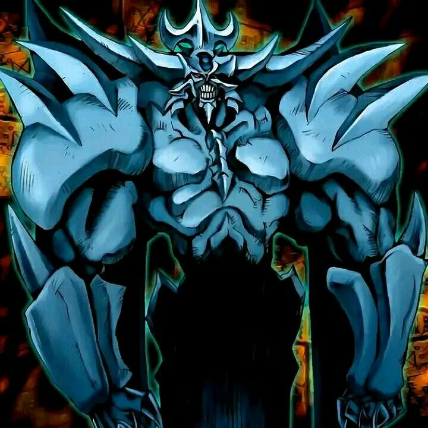

-
Mago Negro
[Mago / Normal]
Você pode enviar até 2 Magias/Armadilhas da sua mão e/ou do campo para o Cemitério; compre esse número de cards. Se este card estiver na sua mão: você pode enviar 1 monstro Mago de Nível 6 ou mais do seu Deck para o Cemitério e, depois, ative 1 desses efeitos; ●Invoque este card por Invocação-Especial. ●Envie este card para o Cemitério e, depois, você pode Invocar por Invocação-Especial 1 "Mago Negro" ou 1 "Pequena Maga Negra" do seu Cemitério. Você só pode usar cada efeito de "Almas dos Magos" uma vez por turno.ATK/ 2500 DEF/ 2100 -
dragão alado de rá
[Besta Divina / Efeito]
Não pode ser Invocado por Invocação-Especial. Requer 3 Tributos para ser Invocado por Invocação-Normal (não pode ser Baixado Normalmente). A Invocação-Normal deste card não pode ser negada. Quando Invocado por Invocação-Normal, outros cards e efeitos não podem ser ativados. Quando este card for Invocado por Invocação-Normal: você pode pagar PV até restarem apenas 100; este card ganha ATK/DEF igual aos PV pagos. Você pode pagar 1000 PV e, depois, escolha 1 monstro no campo; destrua o alvo.ATK/ ???? DEF/ ???? -
Dragão Branco de Olhos Azuis

[Dragão / Normal]
Este dragão lendário é uma poderosa máquina de destruição. Praticamente invencível, muito poucos enfrentaram esta magnífica criatura e viveram para contar a história.ATK/ 3000 DEF/ 2500 -
Kuriboh Alado
[Fada / Efeito]
Se este card no campo for destruído e enviado para o Cemitério: pelo resto deste turno, você não sofre dano de batalha.ATK/ 300 DEF/ 200 -
Obelisco, o Atormentador
[Besta Divina / Efeito]
Requer 3 Tributos para ser Invocado por Invocação-Normal (não pode ser Baixado Normalmente). A Invocação-Normal deste card não pode ser negada. Quando Invocado por Invocação-Normal, cards e efeitos não podem ser ativados. Nenhum duelista pode escolher este card como alvo de efeitos de card. Uma vez por turno, durante a Fase Final, se este card foi Invocado por Invocação-Especial: envie-o para o Cemitério. Você pode oferecer 2 monstros como Tributo; destrua todos os monstros que seu oponente controla. Este card não pode declarar um ataque no turno em que este efeito for ativado.ATK/ 4000 DEF/ 4000 -
Slifer, o Dragão Celeste

[Besta Divina / Efeito]
Requer 3 Tributos para ser Invocado por Invocação-Normal (não pode ser Baixado Normalmente). A Invocação-Normal deste card não pode ser negada. Quando Invocado por Invocação-Normal, cards e efeitos não podem ser ativados. Uma vez por turno, durante a Fase Final, se este card foi Invocado por Invocação-Especial: envie-o para o Cemitério. Ganha 1000 de ATK/DEF para cada card na sua mão. Se um ou mais monstros forem Invocados por Invocação-Normal ou Especial no campo do seu oponente em Posição de Ataque: esses monstros perdem 2000 de ATK e, depois, se algum deles tiver o ATK reduzido a 0 como resultado, destrua-o.ATK/ XXXX DEF/ XXXX -
Caveira Invocada

[ Demônio]
Um demônio com poderes das trevas para confundir os inimigos. Entre os monstros do tipo demônio, é dos mais fortes.
(Este card deve ser sempre considerado como um card "Arquidemônio".)ATK/ 2900 DEF/ 2100